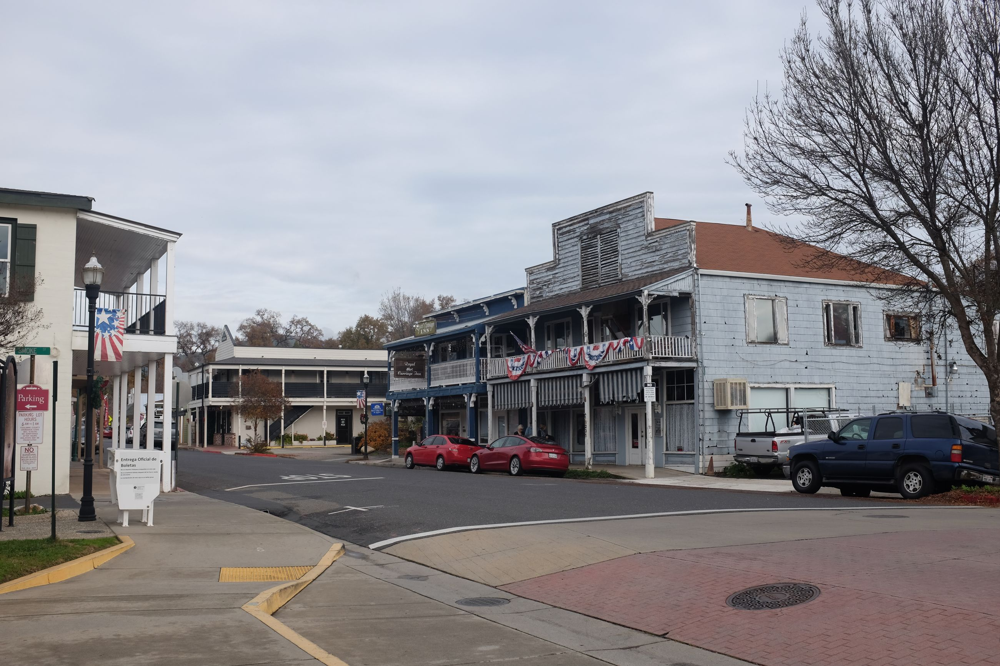
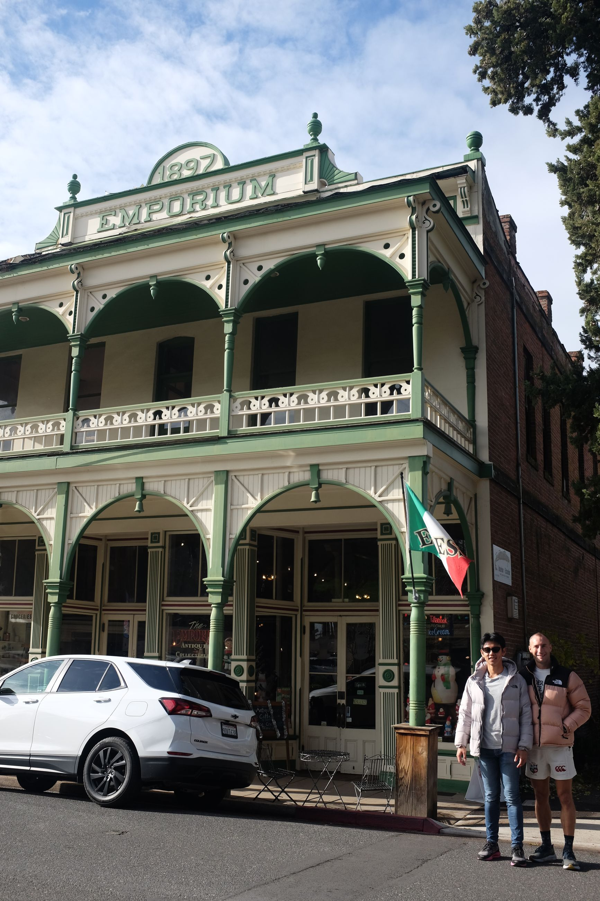
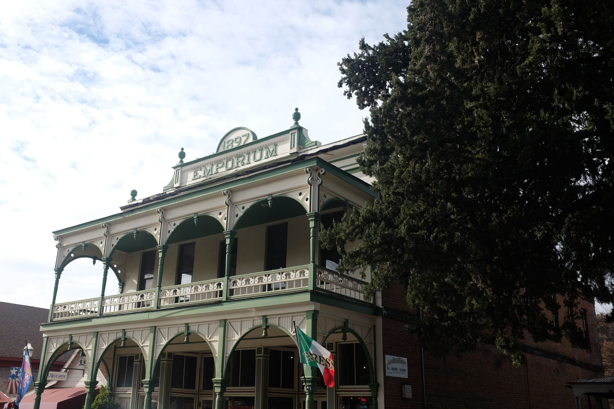
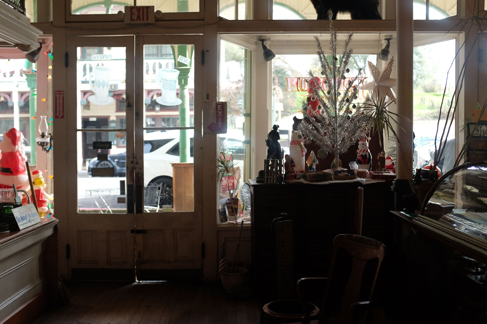
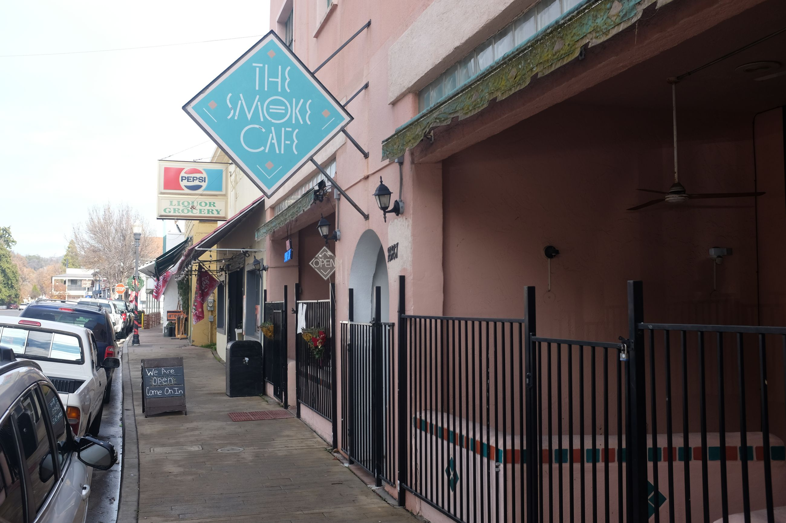
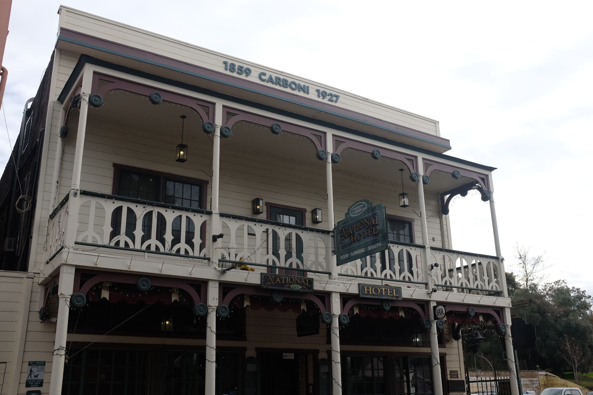
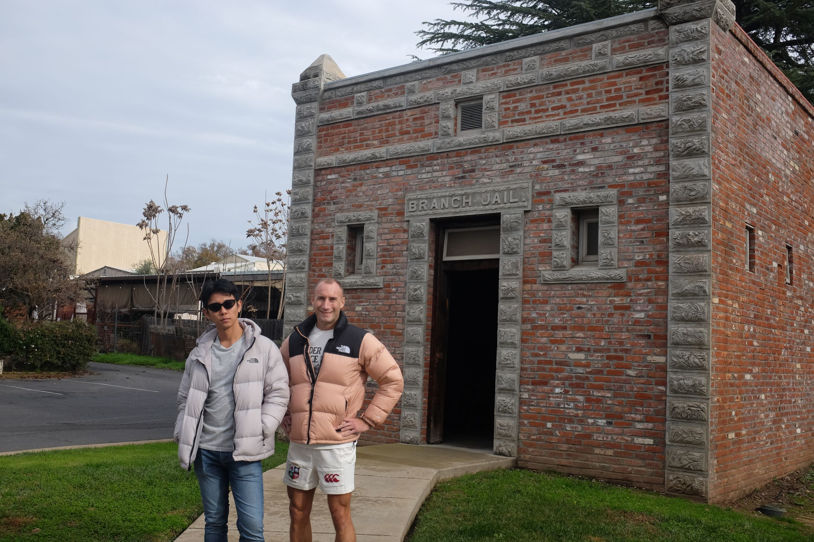

As soon as we enter Jamestown, we already feel the difference between Chinese Camp from where we just came. There is a historical street with preserved buildings from the late 1800's done in a California-Victorian-frontier house style, with their wooden exteriors and balconies decked-out with dangling Yankee Doodle-style flags. The buildings always seem to be square, with the second floor the same size as the first floor. angling from the balcony and From the missions nearer the coast, we head inland into the old gold rush towns. Often, a small sign juts out from the front facade to indicate the shop.

We stop in first to the Emporium, a preserved building from 1897 and grab an espresso. The shop has been turned into a antique store, decorated with Christmas wares. Everything in here feels dated. The floor is creaky, and the door is fashioned from wood that is beginning to tarnish. There are two old ladies brewing coffee using an old espresso machine. They speak in what sounds like a drawl-y California accidents (maybe a western accent?) with blowouts the size of Dolly Parton's hair. One lady manning the till tells us about the history of the building. It was passed down to her from her grandfather who used to own it. She details the renovation to us and walks us through some details of its structure to illustrate the history of the place. I can almost imagine this being a stopover point for horse-drawn carriages.
  
Further down, the town is a mix of old and new. There are what seem like newer, low-rise builds that contrast with the older buildings that preserve a gold rush feel. Odd historical buildings -- such as the old jail -- are preserved. It was located in the front "driveway" of a nearby house, which also spilled out into the public parking lot.
  
That contrast would set the precedent for the next few towns we went to. All throughout the gold rush towns, there is the balancing of modernisation, and history. Some historic buildings have their external structure preserved while others are newer. Either way, the businesses in operation are mostly new -- hotels aside. This balance in old-new architecture and repurposing of space was a common thread throughout the rest of the trip. Each city did it to different degrees, and depending on who founded or passed through these town, those traces would be left behind and gave each town nuance.
Columbia, the next stop, was one such boomtown that preserved the older feel of the gold rush west.